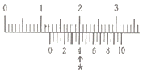
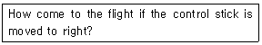
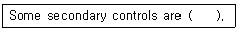
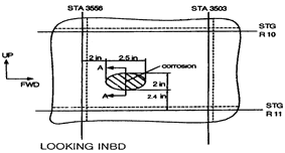
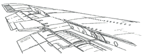

항공기체정비기능사 (2008-10-05 기출문제)
1과목: 비행원리
1. 다음 중 양(+)의 동적안정성을 옳게 설명한 것은?
- 수평 비행기 가속도를 일정하게 유지하려는 경향
- 선회 비행시 가속방향의 수직방향으로 미끄러지려 하는 경향
- 평형상태에서 벗어난 뒤에 다시 평형상태로 되돌아가려는 초기의 경향
- 비행기가 평형상태에서 이탈된 후, 그 변화의 진폭이 시간의 경과에 따라 감소되는 경향
(정답률: 47%)

2. 날개의 시위 길이가 3cm, 고이기의 흐름 속도가 360km/h, 공기의 밀도는 1.21kg/m3, 점성계수가 18.1×10-6Nㆍs/m2일 때 레이놀즈 수는 약 얼마인가?
- 2×107
- 2×109
- 3×107
- 3×109
(정답률: 46%)
3. 다음 중 항공기 날개의 탭에 대한 설명으로 틀린 것은?
- 조종력을 변화시키기 위해 사용되기도 한다.
- 조종면의 뒷전 부분에 압력분포를 변화시킨다.
- 조종면의 앞전 부분에 부착하는 작은 플랩의 일종이다.
- 빠른 속도에서 미세한 조종을 위해 사용되기도 한다.
(정답률: 61%)
4. 항력이 D[kgf]인 비행기가 속도 V[m/s]로 등속도수평비행을 하기 위한 필요마력[PS]를 구하는 식으로 옳은 것은?
- DV/75
- 75/DV
- 75D/V
- 75V/D
(정답률: 70%)
5. 공기의 밀도 단위가 kgfㆍs2/m4으로 주어질 때 kgf 단위의 의미는?
- 질량
- 중량
- 비중
- 비중량
(정답률: 72%)
6. 다음 중 뒷전 플랩의 종류가 아닌 것은?
- 슬롯 플랩
- 파울러 플랩
- 스플릿 플랩
- 크루거 플랩
(정답률: 58%)
7. 다음 중 정압과 동압에 대한 설명으로 틀린 것은?
- 동압과 정압의 단위는 일정하다.
- 동압의 크기는 속도에 반비례한다.
- 동압은 유체의 운동에너지가 압력으로 변화된 것이다.
- 이상 유체의 정상 흐름에서 정압과 동압의 합은 일정하다.
(정답률: 59%)
8. 프로펠러 깃의 선속도가 300m/s 이고, 프로펠러의 진행율이 2.2 일 때, 이 프로펠러 비행기의 비행속도는 약 몇 m/s 인가?
- 210
- 240
- 270
- 310
(정답률: 31%)
9. 회전익 항공기가 수평 최대속도인 경우 이용마력과 필요마력의 관계를 옳게 나타낸 것은?
- 이용마력 = 필요마력
- 이용마력 ＞ 필요마력
- 이용마력2 = 필요마력
- 이용마력 ＜ 필요마력
(정답률: 60%)
10. 비행기가 정상선회를 할 때 비행기에 작용하는 원심력과 구심력의 관계에 대하여 옳게 설명한 것은?
- 두 힘은 크기가 같고 방향도 같다.
- 두 힘은 크기가 같고 방향이 반대이다.
- 두 힘은 크기가 다르고 방향이 같다.
- 두 힘은 크기가 다르고 방향이 반대이다.
(정답률: 78%)
11. 헬리콥터의 방향조종에 관한 설명으로 옳은 것은?
- 조종간을 당기거나 밀어 방향을 조종한다.
- 동체의 방향을 전환하기 위하여 동시피치 조종을 한다.
- 주회전 날개의 받음각을 조절하여 플랩핑을 감소시켜 방향을 변환한다.
- 주회전 날개의 회전으로 인해 동체에 발생하는 회전력을 꼬리 회전 날개를 이용하여 상쇄시켜 방향을 결정한다.
(정답률: 71%)
12. 다음 중 최대 활공을 위한 조건으로 옳은 것은?
- CL/CD의 값이 최대일 때
- CL/CD의 값이 1 일 때
- CL/CD의 값이 최소일 때
- CL/CD의 값이 0 일 때
(정답률: 57%)
13. 한국형 중등 훈련기 KT-1 에는 도살 핀의 적용이 두드러지게 나타나는데 이러한 도살 핀을 장착하는 주된 목적으로 옳은 것은?
- 가로 안정성을 증가시키기 위함
- 가로 및 세로 안정성을 동시에 증가시키기 위함
- 큰 받음각에서도 세로 안정성을 증가시키기 위함
- 큰 옆미끄럼 각에서도 방향 안정성을 증가시키기 위함
(정답률: 64%)
14. 다음 중 버핏 현상을 가장 옳게 설명한 것은?
- 이륙시 나타나는 비틀림 현상
- 착륙시 활주로 중앙선을 벗어나려는 현상
- 실속속도로 접근시 비행기 뒷부분의 떨림 현상
- 비행 중 비행기의 앞부분에서 나타나는 떨림 현상
(정답률: 69%)
15. 모양이 일정한 직사각형이 아닌 날개의 길이가 40m, 평균시위의 길이가 2m, 면적이 80m2일 때, 이 날개의 가로세로비는 얼마인가?
- 10
- 20
- 30
- 40
(정답률: 70%)
16. [그림]은 어떤 작업물을 최소 측정값이 1/20mm인 버니어 캘리퍼스로 측정한 것이다. 어미자와 아들자의 눈금이 화살표로 표시된 곳에서 일치하였다면 측정값은 몇 mm인가?

- 12.4
- 12.8
- 14.0
- 18.0
(정답률: 74%)
17. 운항정비 기간에 발생한 항공기 정비 불량 상태의 수리와 운항 저해의 가능성이 많은 각 계통의 예방정비 및 감항성을 확인하는 것을 목적으로 하는 정비작업은?
- 중간점검
- 기본점검
- 정시점검
- 비행 전후 점검
(정답률: 62%)
18. 다음 중 같은 리벳 열에서 인접한 리벳의 중심간 거리를 무엇이라 하는가?
- 끝거리
- 피치
- 게이지
- 횡단 피치
(정답률: 52%)
19. 안전결선 작업방법에 대한 설명 중 틀린 것은?
- 3개 이상의 부품이 폐쇄된 기하학적인 형상을 할 때는 단선식 결선법을 사용하는 것이 좋다.
- 안전결선의 끝 부분은 1~2회 정도 꼬아 끝을 대각선 방향으로 절단한다.
- 안전결선을 신속하게 하기 위해서는 안전결선용 플라이어 또는 와이어 트위스터를 사용한다.
- 안전결선에 사용된 와이어는 다시 사용해서는 안된다.
(정답률: 69%)
20. 다음 중 항공기의 지상취급작업에 속하지 않는 것은?
- 세척작업
- 견인작업
- 계류작업
- 지상 유도작업
(정답률: 57%)
2과목: 항공기정비
21. 다음 중 항공기에서 사용되는 고압가스로서 물과 혼합될 때 화학반응을 일으켜 기체 상태로 되면서 급격한 팽창이 일어나 일 때의 가스 압력을 비상 동력원으로 이용하는 것은?
- 수소
- 산소
- 히드라진
- 할로겐
(정답률: 70%)
22. 리벳의 부품번호 MS 20470 AD 6-6에서 리벳의 재질을 나타내는 “AD”는 어떤 재질을 의미하는가?
- 1100
- 2017
- 2117
- 모넬
(정답률: 43%)
23. 다음 비파괴검사 방법 중 표면에 열린 결함만 검출할 수 있는 것은?
- 침투탐상검사
- 와전류탐상검사
- 자분탐상겁사
- 초음파탐상검사
(정답률: 58%)
24. 항공기 유관(호스)식별용 표찰에 “TOXIC”이라 표시되어 있다. 이 유관에 사용하여야 하는 물질은?
- 연료
- 유독 물질
- 산소
- 프레온 가스
(정답률: 65%)
25. 항공기 기체의 중량 및 중심한계의 변경, 날개형태의 변경, 항공기 표피 및 조종능력의 변경 등을 행하는 정비작업은?
- FDM 작업
- 보수작업
- 수리작업
- 개조작업
(정답률: 76%)
26. 다음 중 항공기 견인시의 안전사항으로 틀린 것은?
- 야간에 견인할 때 전방등 및 항법등 외에도 필요한 조명을 하여야 한다.
- 견인할 때 견인봉 위에 감시자를 탑승시켜 봉의 상태 및 견인상태를 확인하도록 한다.
- 주변 감시자는 항공기 날개의 양 끝부분에 위치하여 견인상태를 감시한다.
- 견인에 앞서 견인할 부근에 장애물이 없는가를 확인한다.
(정답률: 67%)
27. 일감의 표면을 보호하고 작업을 쉽게 하기 위하여 보조바이스를 사용하는데 이러한 공구중 일감의 모서리를 가공할 때 주로 사용하는 것은?
- V홈 바이스 조
- 샤핑 바이스
- 클램프 바이스 바
- 수평 바이스
(정답률: 61%)
28. 다음 소화기 중 달콤한 마취제 냄새와 함께 무색의 액체로서 대기에 배출될 때에 산소를 흡수하므로 생명에 위험을 초래하기 때문에 주의를 해야 하는 것은?
- CBM 소화기
- CO2 소화기
- 포말 소화기
- 할론 소화기
(정답률: 36%)
29. 다음 물음에 옳은 것은?

- nose up
- bank to the left
- nose down
- bank to the right
(정답률: 62%)
30. 안전에 직접 관련된 설비 및 구급용 치료 설비 등을 쉽게 알아보게 하기 위하여 칠하는 안전색채는 무엇인가?
- 청색
- 황색
- 녹색
- 오렌지색
(정답률: 86%)
31. 다음 중 한쪽 방향으로만 움직이고 반대쪽 방향은 록크가 되어 있어 작업속도를 향상시킨 렌치는?
- Open-end wrench
- Offset box wrench
- Combination wrench
- Ratcheting box-end wrench
(정답률: 50%)
32. 다음 중 항공기가 운항 중에 고장없이 기능을 정확하고 안전하게 유지랑 수 있는 능력을 무엇이라 하는가?
- 쾌적성
- 정시성
- 감항성
- 경제성
(정답률: 78%)
33. 다음 중 육안검사 범주에 속하는 비파괴검사는?
- X-Ray 검사
- 자분탐상검사
- 초음파탐상검사
- 보어스코프검사
(정답률: 73%)
34. 다음 중 ( )안에 해당되지 않는 것은?

- tabs
- elevators
- slats
- spoilers
(정답률: 63%)
35. 다음 중 공기 중에서 금속과 이에 접촉하는 금속 또는 다른 물질 접촉면에 상대적으로 반복하여 미세한 미끄럼이 생길 때 금속 표면에 일어나는 손상은?
- 마찰 부식
- 갈바닉 부식
- 표면 부식
- 입자간 부식
(정답률: 47%)
36. 다음 중 철강의 5원소가 아닌 것은?
- C
- Si
- Mn
- AI
(정답률: 55%)
37. 헬리콥터에서 휠형 착륙장치를 스키드형 착륙장치와 비교하였을 때의 주된 특징은?
- 수상 착륙 가능
- 눈에서 착륙가능
- 지상 활주 가능
- 동체의 항력증가
(정답률: 66%)
38. 지상진동시험을 할 경우 외부 하중의 진동수와 고유진동수가 같게 되어 구조물에 큰 변위를 발생시키는 현상을 무엇이라 하는가?
- 공진 현상
- 단주기 운동
- 돌풍 현상
- 착륙시의 충격
(정답률: 75%)
39. 왕복기관의 나셀과 마운트에 대한 설명으로 틀린 것은?
- 나셀의 카울링은 기관을 냉각시키기 위한 냉각 공기의 양을 조절하는 기능을 말한다.
- 나셀의 카울링은 나셀의 공기저항을 감소시키는 역할을 한다.
- 기관 마운트는 일반적으로 카울플랩에 부착한다.
- 나셀의 앞쪽 카울링에는 공기 스쿠프가 있다.
(정답률: 41%)
40. 항공기에 사용하는 시일 중 오링에 관한 설명으로 틀린 것은?
- 오링은 압축되지 않으면 누설의 원인이 된다.
- 오링의 두께는 홈의 깊이보다 약간 작아야 한다.
- 피스톤이 움직이면 오링은 감기거나 또는 미끄러진다.
- 작동유, 오일, 연료, 공기 등의 누설을 방지한다.
(정답률: 53%)
3과목: 항공기체
41. 다음 중 꼬리날개에 대한 설명으로 옳은 것은?
- 수직 꼬리날개는 수직 안정판과 승강키로 구성된다.
- 수평 꼬리날개는 수평 안정판과 방향키로 구성된다.
- 수평 꼬리날개는 항공기의 방향을 바꾸는 빗놀이 운동을 담당한다.
- 동체와 수직 꼬리날개 앞부분이 만나는 곳에 항공기의 방향안전성을 주기 위하여 도살핀을 부착하기도 한다.
(정답률: 78%)
42. 다음 중 회전날개의 형식이 아닌 것은?
- 관절형 회전날개
- 반고정형 회전날개
- 고정형 회전날개
- 롤 베어링 회전날개
(정답률: 71%)
43. 다음 중 항공기 기체에서 위치를 표시하는 선 중 동체 중심선을 기준으로 오른쪽과 왼쪽으로 평행한 나비를 나타내는 선은?
- 동체 위치선
- 동체 수위선
- 동체 버턱선
- 날개 위치선
(정답률: 58%)
44. 좌굴에 관한 설명으로 옳은 것은?
- 세장비가 작은 봉은 좌굴 강도가 작다.
- 압축하중을 받는 부재에 발생 가능한 현상이다.
- 큰 인장하중을 받는 부재는 좌굴될 위험이 있다.
- 기둥의 좌굴 위험을 줄이기 위해서는 길이를 늘인다.
(정답률: 43%)
45. 항공기 착륙장치의 조종간을 올리면 가장 먼저 작동되는 밸브는?
- 선택밸브
- 우선밸브
- 릴리프밸브
- 시퀀스밸브
(정답률: 29%)
46. 다음의 기체 결함 스케치 도면은 어느 방향을 기준으로 작성된 것인가?

- 앞에서 뒤쪽을 쳐다본 경우
- 뒤에서 앞쪽으로 쳐다본 경우
- 기축선을 향해 쳐다본 경우
- 기축선 쪽에서 밖으로 쳐다본 경우
(정답률: 60%)
47. 실속속도가 120km/h인 비행기를 240km/h의 속도로 수평비행시 조종간을 당겨 최대양력계수의 상태가 되었다면 이 때의 하중배수는?
- 2
- 3
- 4
- 5
(정답률: 25%)
48. 다음 중 특정 항공기에 인가된 최대하중을 나타내는 것은?
- Gross weight
- Tare weight
- Empty weight
- Zero weight
(정답률: 51%)
49. 다음 중 비강도, 고온 강도, 내식성 등이 우수하고 비중이 약 4.5인 금속은?
- 구리
- 마그네슘
- 티탄
- 알루미늄
(정답률: 64%)
50. 다음 중 항공기 날개의 [그림]에서 볼 수 없는 것은?

- 플랩
- 도움날개
- 슬랫
- 스포일러
(정답률: 55%)
51. 헬리콥터의 목재로 된 회전날개에서 금속코어를 넣는 가장 큰 이유는?
- 깃의 부식을 방지하기 위해
- 깃의 강도를 증가시켜 주기 위해
- 깃의 궤도를 맞추는 기준점으로 삼기 위해
- 무게중심을 맞추어주는 질량 밸런스 역할을 하기 위해
(정답률: 59%)
52. 도면의 개정란에 대한 설명으로 틀린 것은?
- 도면에 관한 변경내용을 기술한다.
- 변경일자와 변경관리번호를 포함한다.
- 도면변경서는 별도의 문서로 발행하지 않는다.
- 도면변경서에 대한 지시 및 변경내용을 기술한다.
(정답률: 76%)
53. 항공기 응력 외피형 날개에 작용하는 하중의 대부분을 담당하여 휨하중과 전단력에 강한 구조 부재는?
- 스킨
- 스파
- 리브
- 스트링거
(정답률: 40%)
54. 하중 W 가 작용하고 있는 지름이 d 인 원형단면봉에 방생하는 응력의 크기는?
- 4W/πd2
- 2W/πd
- 4W/d2
- 2W/πd2
(정답률: 41%)
55. 헬리콥터가 뒤로 비행하기 위해서 회전 날개의 회전면은 어느 쪽을 행해야 하는가?
- 앞쪽
- 뒤쪽
- 왼쪽
- 오른쪽
(정답률: 67%)
56. 고(高)고도를 비행하는 항공기는 고도에 따른 기압차에 의한 압력에 견딜 수 있도록 설계하여야 한다. 이렇게 설계된 동체 내부를 무엇이라 하는가?
- 여압실
- 고장력실
- 트러스실
- 내부응력실
(정답률: 68%)
57. 다음 중 재료 규격의 이름이 틀리게 짝지어진 것은?
- ALCOA규격 - 미국 ALCOA사 규격
- AA규격 - 미국 알루미늄협회 규격
- ASTM규격 - 미국 재료시험협회 규격
- AISI규격 - 미국 자동차기술협회 규격
(정답률: 69%)
58. 알루미늄 합금에서 나타나는 특징 중 열처리를 한 후 일정한 온도에서 시간이 지남에 따라 합금의 강도와 경도가 증가하는 현상은?
- 항온변태
- 표면경화
- 시효경화
- 항온 열처리
(정답률: 76%)
59. 다음 중 방식 처리법이 아닌 것은?
- 알로다인 처리
- 인산염 피막 처리
- 양극 산화 처리
- 화염 담금질 처리
(정답률: 64%)
60. 헬리콥터의 동력구동축 중에서 기관의 동력을 변속기에 전달하는 구동축은?
- 기관 구동축
- 엑세서리 구동축
- 주회전날개 구동축
- 꼬리회전날개 구동축
(정답률: 60%)